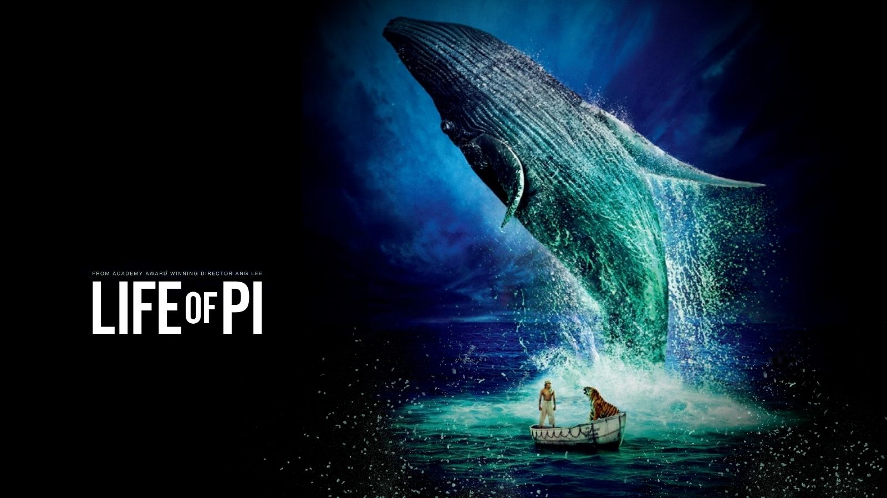

The 2012 much-acclaimed film Life of Pi is an adventure fantasy drama film and is now available on Netflix. The film Life of Pi begins with a young man hurtling through an epic voyage of adventure and exploration, surviving a disaster at sea.
He establishes an unlikely bond with another survivor when he is cast away: a fearsome Bengal tiger. The film has got a good response from fans and movie buffs for the acting skills and storyline. Talking about the details of the film, fans wonder if Life of Pi is based on a true story? Read on to know more details about the series: